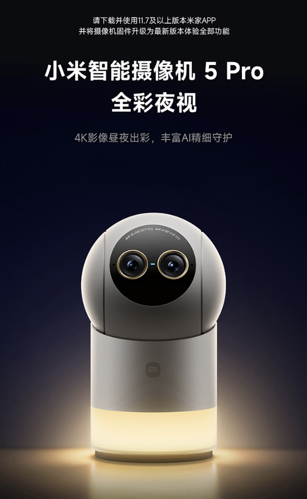
THE TECH EDIT
기술의 변화, 매일 한눈에.
카메라 · 스마트폰 · AI, 해외 테크 소식을 모아 전합니다.
최근 발행2026-10-13
새로 들어온 소식
LATEST STORIES
최신 뉴스
전체 3,633개 기사Panasonic, Google과 협력하여 홈 보안 솔루션 공동 개발
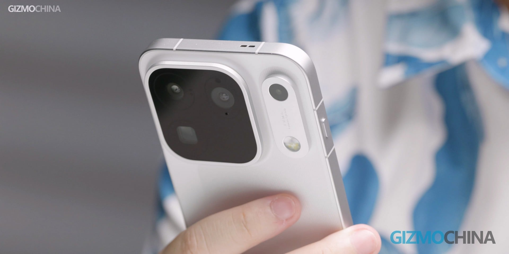
오포 Find X10 Pro "미니", 와이드스크린 디스플레이와 듀얼 2억 화소 카메라 탑재할 수도
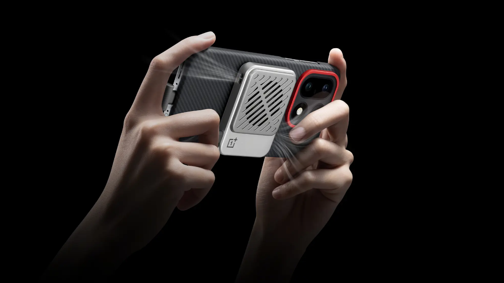
원플러스, 신용카드보다 작은 마그네틱 스마트폰 쿨러 출시

OnePlus 16 × '범인수선전' 애니메이션 컬래버레이션 기프트 박스 공개: 전용 마그네틱 스마트폰 거치대, 보호 케이스, SIM 카드 트레이 핀 등 포함, 스마트폰 구매 시 269위안 추가

5999위안부터: OnePlus 16 스마트폰 공식 출시, 6세대 스냅드래곤 8 슈퍼 엘리트 칩셋, 세계 최초 185Hz 초고주사율
고전 게임 '노 맨즈 스카이', Apple iOS 플랫폼 출시 예정, iPhone 11 이상에서 플레이 가능
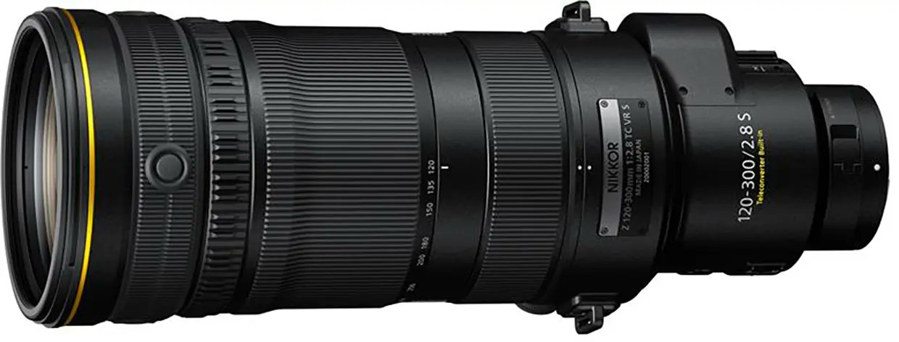
Nikon Z 120-300mm F2.8 렌즈 스파이샷 유출: 1.4배 텔레컨버터 내장, 10월 말 출시 예정
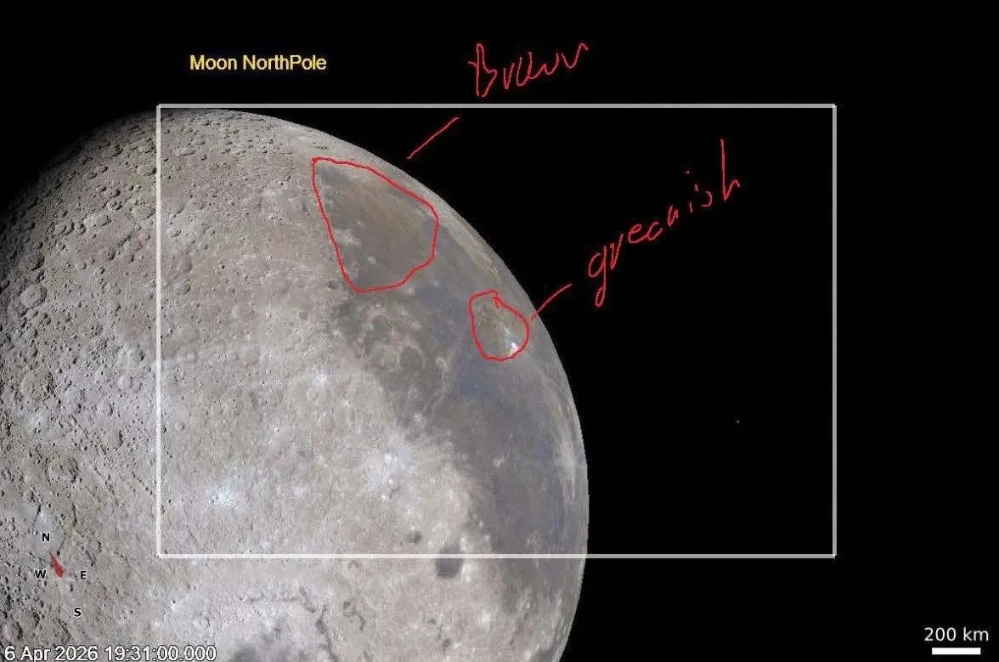
NASA, 아르테미스 2호의 800GB 이상 달 과학 데이터 공개… Apple iPhone 촬영 영상은 정리 중
오후 8시부터 구매 가능: 징둥, 최대 26,888위안 홍바오(할인쿠폰) 무제한 사용 가능, iPhone 16 Pro 1위안 한정 판매
iPhone Duo 폴더블 디스플레이 스마트폰 출시 임박, Apple COO 사비흐 칸 정저우 방문 및 Fujifilm 공장 시찰
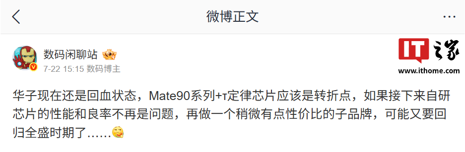
Huawei 스마트폰 전면 복귀 예정
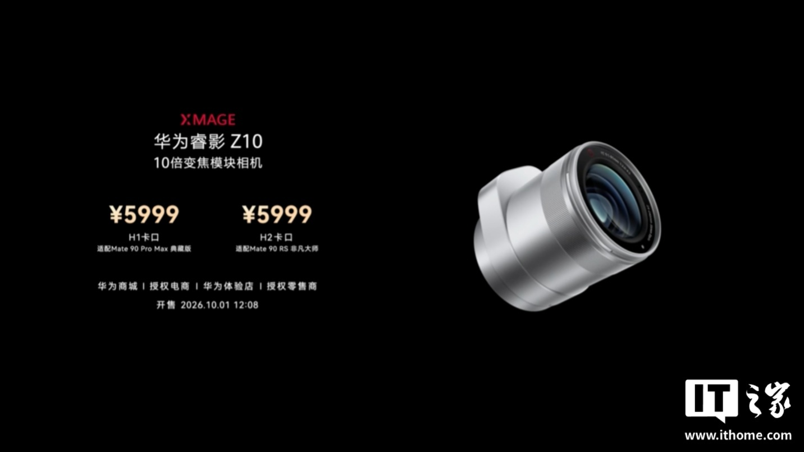
Huawei 루이잉 Z10 모듈형 카메라의 추가 기술 세부 정보 공개: 홍펑 등 다양한 센서 통합, 코드명 "킹콩"
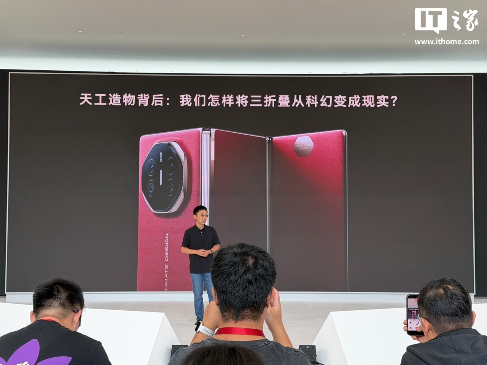
Huawei Mate XT 2 트리플 폴더블 스마트폰이 초기 Z형 디자인에서 U형으로 변경된 이유가 공개됐다. 리샤오룽은 무게와 두께가 핵심이라고 밝혔다.
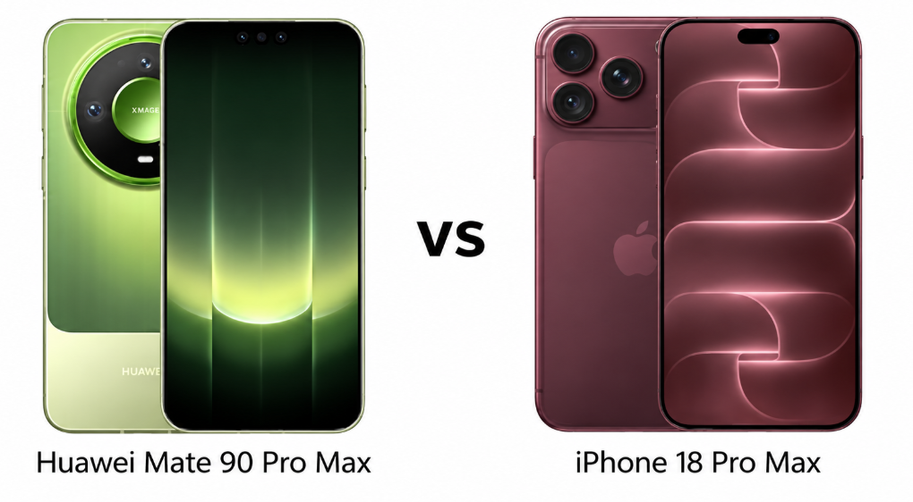
화웨이 메이트 90 프로 맥스 대 아이폰 18 프로 맥스: 어떤 플래그십이 더 좋을까?
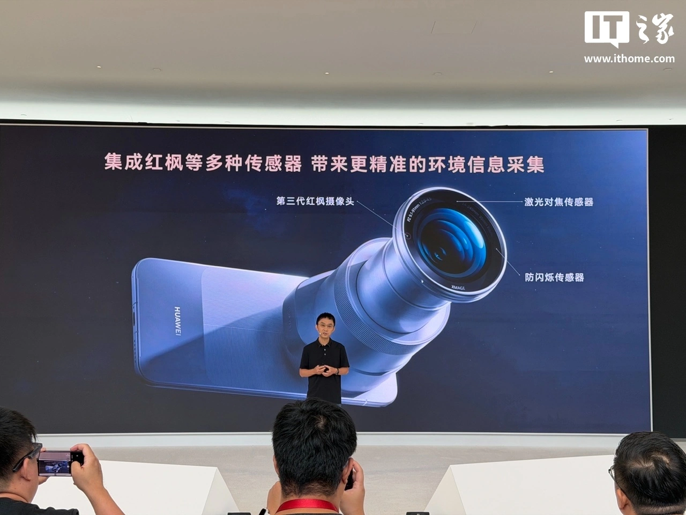
Huawei 리샤오룽: 루이잉 Z10 모듈 카메라 HyperClick 슈퍼 마운트는 독립 마운트 어댑터 디자인을 채택하여 향후 더 많은 모델에 적용 가능
Huawei 리샤오룽, 3세대 홍펑(Hongfeng) 이미지 기능 차이점 상세 설명, 환경부터 인물까지 색상 재현 기술 시스템 구축
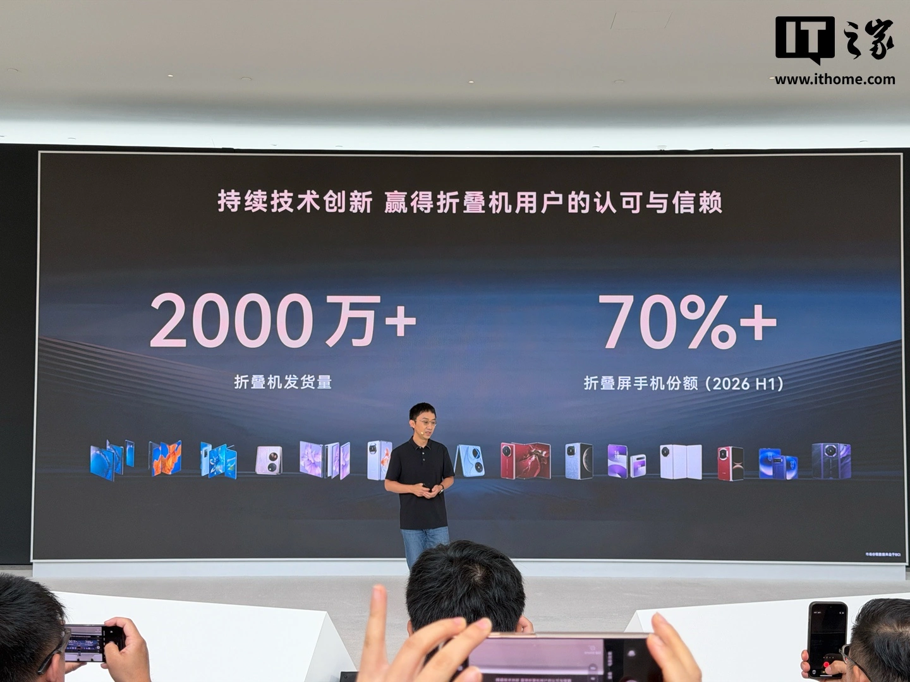
Huawei 폴더블 디스플레이 스마트폰 누적 출하량 2천만 대 돌파, 상반기 시장 점유율 70% 초과
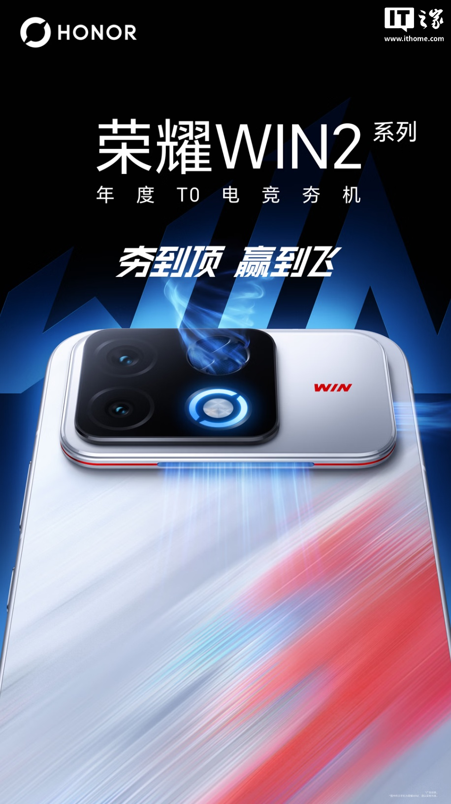
Honor WIN2 시리즈 스마트폰 사전 예약 시작, 최고 사양 16GB+1TB

HarmonyOS 7, 또 다른 인기 기능 추가: Huawei Pura X View 스마트폰 "109" 버전, 일출/일몰에 따른 다크 모드 자동 전환 지원
Coolpad, 세계 최초 와이드스크린 안드로이드 스마트폰 곧 출시 예정

CASETiFY, 코지마 프로덕션 협업 스마트폰 케이스 및 액세서리 시리즈 출시
검색 결과가 없습니다
다른 검색어를 입력하거나 필터를 초기화해 보세요.